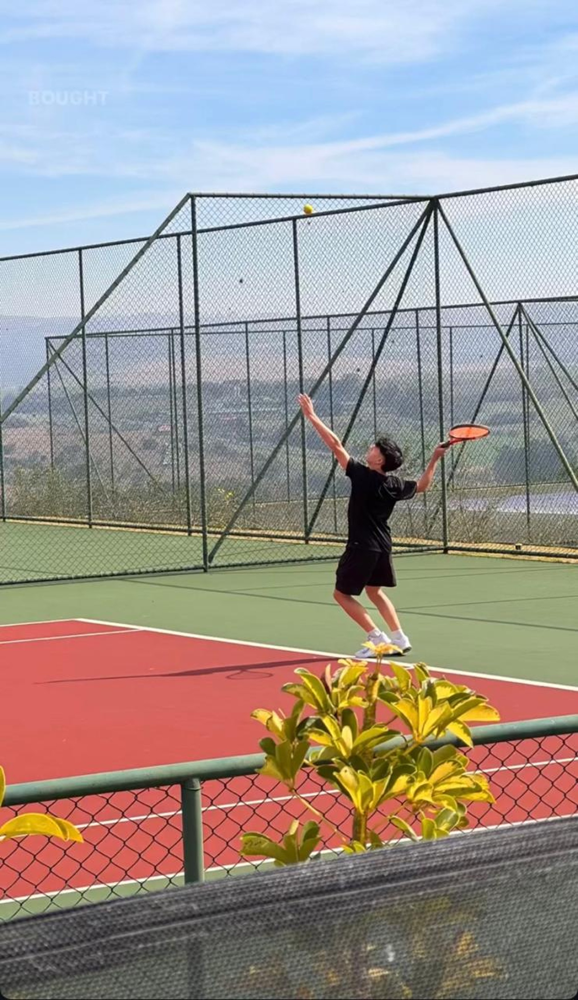
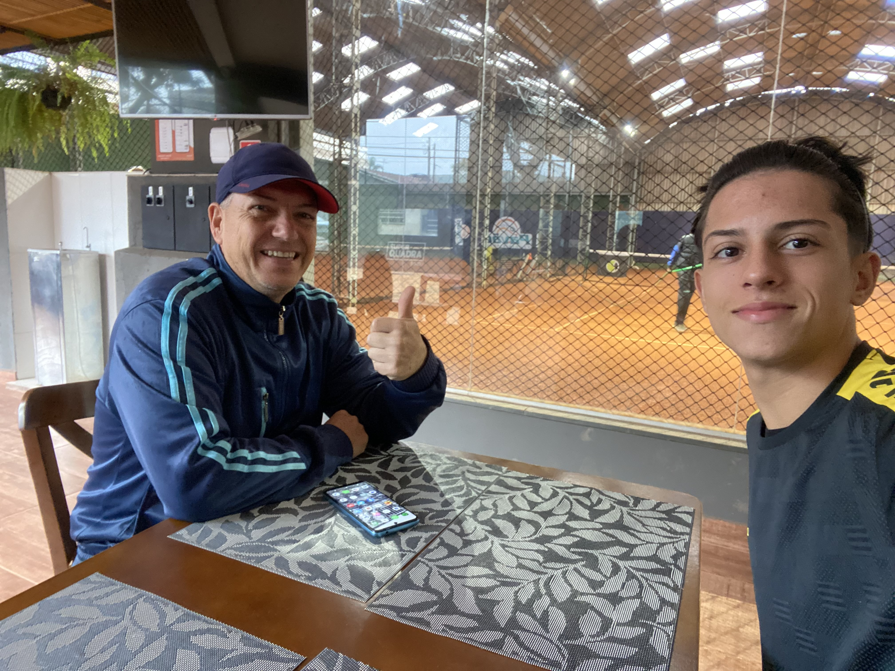
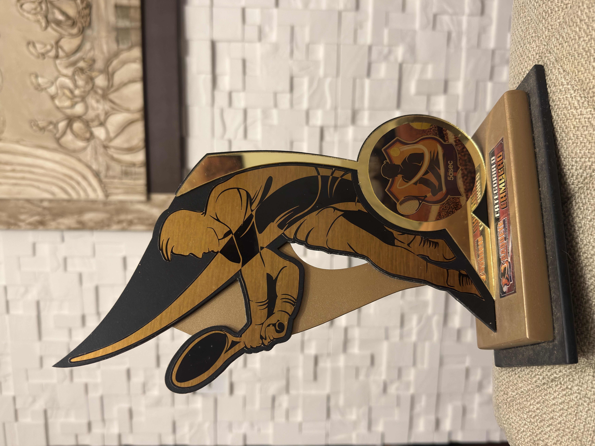
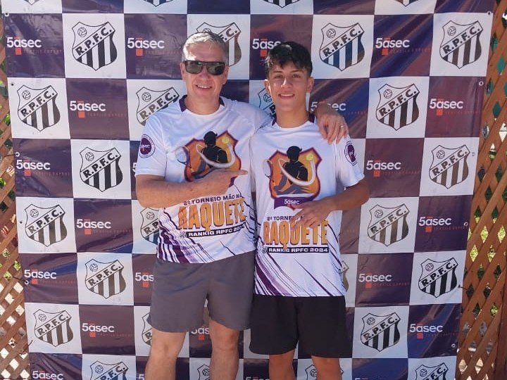

Peguei numa raquete pela primeira vez ainda criança e, desde então,
a quadra virou meu refúgio. Aqui,
registro minhas experiências,
meus equipamentos e os aprendizados que levo de dentro das linhas para fora
delas.

Quando eu tinha os meus 8 anos de idade, meu pai me deu a minha primeira raquete de tênis.
Aqui se começou uma grande rivalidade. Sempre que disputávamos alguma partida, não era na brincadeira.
O momento onde comecei a ser mais reconhecido em Ribeirão Pires. Depois desse dia, conheci muita gente do tênis.
Hoje em dia eu pratico esse esporte casualmente, quando tenho algum tempo sobrando. E mesmo assim, eu ganho do meu pai.
Toda vez que eu rebatia a bolinha e mandava ela para fora da quadra. Eu treinava aquele movimento até eu acertar.
Toda vez que eu rbatia a bolinha e mandava ela para fora da quadra. Eu treinava aquele movimento até eu acertar.
Depois de um tempo jogando tênis, aprendi que o adversário não está do outro lado da quadra, está na sua cabeça, na sua concentração e até mesmo na sua respiração.

2023 · Jogo de dupla com o meu pai
2024 · Primeira vitoria de torneio de tênis
2024 · Eliminação do meu pai em torneioTMT Tênis · Projeto Individual · Thiago Menezes Teixeira · São Paulo Tech School - Ciência da Computação · 2026